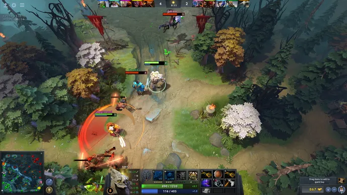
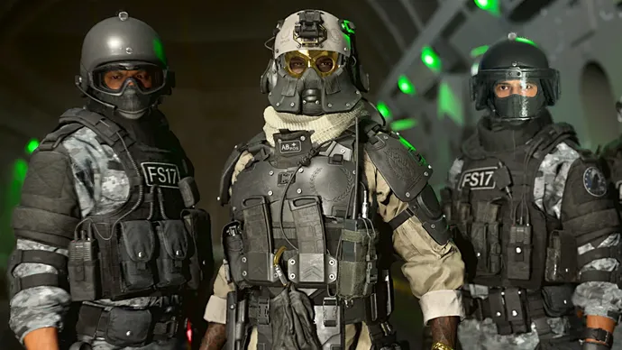
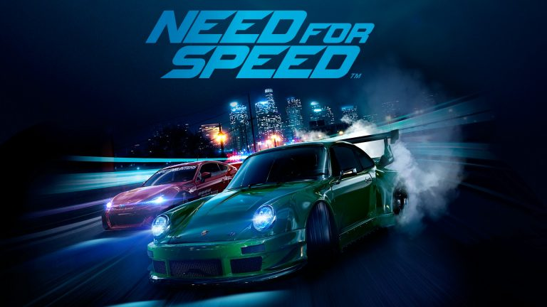
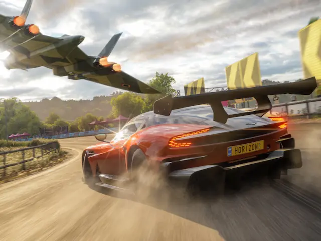
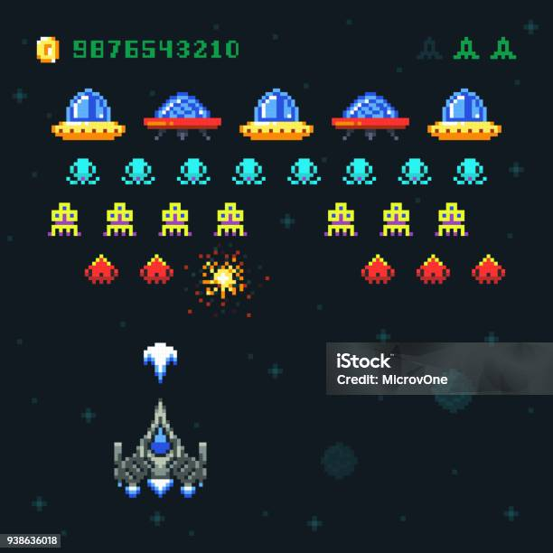

Dota 2
It feels contrived to describe Dota 2 as a hobby rather than a game, but that doesn’t make that description any less fitting. I’ve poured thousands of hours of my life into it, and I can see myself pouring in thousands more. Dota isn’t just a game: it’s an eternally evolving battleground where limits are tested and friendships are forged..

- Fantastical Theme: Dota's premise of wizards battling to destroy fragments of a sentient moon is wonderfully absurd, adding a whimsical charm to the game.
- Mechanical Complexity: Despite its silliness, Dota is mechanically deep, with a vast array of skills and strategies to master, ensuring constant surprises and unexpected moments.
- Time Sink: Players invest significant time in Dota, yet its ability to consistently provide fresh and entertaining experiences underscores its enduring appeal.
- Emotional Rollercoaster: Each match brings a mix of gasp-inducing plays and moments of hilarity, keeping players engaged and eager for more.
Call Of Duty: Warzone 2
I thought Warzone was the slickest battle royale at the time, and well, Warzone 2 is its long-awaited sequel. While it might not be quite as gargantuan as its predecessor in terms of popularity, it's still a massive deal, with fantastic gunplay and COD's famously streamlined shooting and looting. You've got a plethora of attachments to match your playstyle, along with a meta filled with loadouts that's constantly shifting.

- Intense Action: Warzone immerses players in fast-paced, adrenaline-pumping battles set in a vast, dynamic environment, delivering an intense and thrilling experience.
- Strategic Depth: Beyond its action-packed gameplay, Warzone requires strategic thinking and teamwork, with players needing to make tactical decisions on the fly to outmaneuver opponents and secure victory.
- Community Engagement: The game's vibrant community fosters competition, collaboration, and camaraderie, with players forming alliances, competing in tournaments, and sharing epic moments, enhancing the overall experience.
- Technical Mastery: Warzone's combination of gunplay mechanics, equipment management, and map awareness demands skill and precision, rewarding players who invest time in mastering its intricacies.
Valorant
Valorant is a tactical team-based shooter that's similar to CS:GO, but with ninjas and cyborgs. This isn't a game where you can jump around corners and spray wildly, oh no. To succeed, you must coordinate with your teammates, get your aim on point, and master your favourite agents.

- Tactical Gameplay: Valorant offers strategic, team-based gameplay that emphasizes coordination, communication, and careful planning, providing players with a deep and rewarding tactical experience.
- Unique Characters: Each character in Valorant, known as an Agent, comes with distinct abilities and playstyles, allowing for diverse strategies and dynamic gameplay scenarios, adding depth and complexity to matches.
- Evolving Meta: The game's evolving meta, influenced by updates, patches, and player strategies, keeps matches fresh and exciting, encouraging adaptation and innovation among players as they navigate the ever-changing landscape.
- Competitive Scene: Valorant boasts a thriving competitive scene, with tournaments, leagues, and professional esports events showcasing top-tier gameplay and providing opportunities for players to test their skills and compete against the
Need for Speed
Rev up your engines and get ready for high-speed thrills in the world of Need for Speed! From sleek sports cars to customizable rides, this adrenaline-fueled racing franchise offers heart-pounding action and intense competition. Strap in and hit the asphalt as you compete against rivals, evade the law, and chase glory on the streets.

- Fast-Paced Action: Need for Speed delivers non-stop excitement with its fast-paced races, high-speed pursuits, and thrilling challenges, keeping players on the edge of their seats with every twist and turn.
- Customization Options: Customize your ride to perfection with a wide range of options, from performance upgrades to visual enhancements, allowing you to create the ultimate racing machine that reflects your style and personality.
- Multiplayer Mayhem: Compete against friends and rivals online in intense multiplayer races, or join forces in cooperative challenges to dominate the leaderboards and prove your skills on the streets.
Forza Horizon
Experience the thrill of open-world racing in Forza Horizon, where the road is yours to explore and the possibilities are endless. From breathtaking landscapes to dynamic weather conditions, immerse yourself in a world of unparalleled beauty and excitement as you compete in epic races and showcase your skills behind the wheel.

- Open-World Freedom: Explore a vast and vibrant world filled with diverse landscapes, hidden treasures, and thrilling challenges, as you discover new locations and push the limits of your driving prowess.
- Diverse Vehicle Roster: Choose from a wide selection of cars, ranging from exotic supercars to off-road beasts, each meticulously detailed and faithfully recreated, allowing you to find the perfect ride for every race and terrain.
- Dynamic Seasons: Experience the beauty and unpredictability of the seasons as they change dynamically, affecting the environment and gameplay in exciting ways, from snowy drifts to sun-drenched highways.
Mario Kart
Get ready to race with everyone's favorite plumber and his pals in the wacky world of Mario Kart! From banana peels to blue shells, this iconic racing series is known for its chaotic multiplayer mayhem and beloved cast of characters. Grab a controller and join the fun as you drift, boost, and power-slide your way to victory!

- Classic Characters: Choose from a colorful cast of characters from the Mario universe, each with their own unique abilities and quirks, as you compete in fast-paced races and frantic battles across whimsical tracks and vibrant landscapes.
- Dynamic Power-Ups: Unleash a variety of power-ups and weapons to gain the edge over your opponents, from speed-boosting mushrooms to game-changing items like the infamous blue shell, ensuring every race is filled with surprises and excitement.
- Accessible Gameplay: Whether you're a seasoned veteran or a newcomer to the series, Mario Kart offers accessible and intuitive gameplay that's easy to pick up but difficult to master, providing endless fun for players of all ages and skill levels.
Pac-Man
Step into the maze and embark on a classic gaming adventure with Pac-Man! Guide the iconic yellow hero through a labyrinth of dots, power pellets, and colorful ghosts as you strive for high scores and arcade glory. With its simple yet addictive gameplay, Pac-Man has captured the hearts of players for generations.

- Timeless Gameplay: Master the art of munching dots and evading ghosts in this timeless arcade classic, where quick reflexes and strategic planning are key to surviving and thriving in the maze.
- Challenging Mazes: Navigate a series of increasingly complex mazes filled with twists, turns, and power-ups, as you strive to outmaneuver the relentless ghosts and claim victory.
- Endless Replayability: With its simple yet addictive gameplay and infinite maze variations, Pac-Man offers endless replayability and entertainment, ensuring each playthrough is as thrilling and enjoyable as the last.
Space Invaders
Defend Earth from an alien invasion in the classic arcade shooter, Space Invaders! Blast wave after wave of relentless alien attackers as you maneuver your ship across the screen, dodging enemy fire and racking up high scores. With its iconic pixelated graphics and addictive gameplay, Space Invaders is a true arcade masterpiece.

- Intense Action: Experience heart-pounding action and non-stop excitement as you face off against hordes of alien invaders in this iconic arcade shooter, where every second counts and every shot could mean the difference between victory and defeat.
- Strategic Shooting: Use precise aiming and strategic planning to take down the alien menace, timing your shots and dodges carefully to avoid being overwhelmed by enemy fire and secure victory for humanity.
- Classic Appeal: With its retro-inspired graphics and simple yet addictive gameplay, Space Invaders appeals to gamers of all ages, offering a nostalgic trip down memory lane for veterans and a thrilling introduction to arcade gaming for newcomers.
Tetris
Arrange falling blocks and clear lines in the timeless puzzle game, Tetris! Test your spatial awareness and quick thinking as you rotate and maneuver Tetriminos to create complete lines and prevent the screen from filling up. With its addictive gameplay and endless challenges, Tetris has become a beloved classic in the world of arcade gaming.

- Addictive Puzzle Solving: Challenge your mind and reflexes in this addictive puzzle game, where the goal is simple yet the gameplay is endlessly engaging, as you strive to clear lines and rack up points in a race against time.
- Endless Variety: With its random assortment of Tetriminos and ever-increasing speed, Tetris offers endless variety and replayability, ensuring each game is a unique and thrilling experience that keeps players coming back for more.
- Timeless Appeal: Whether you're a seasoned Tetris veteran or a newcomer to the game, Tetris offers timeless appeal and universal appeal, with its simple yet challenging gameplay and iconic blocky graphics capturing the hearts of gamers around the world for decades.